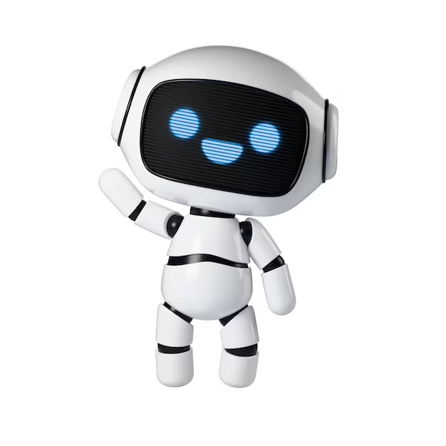
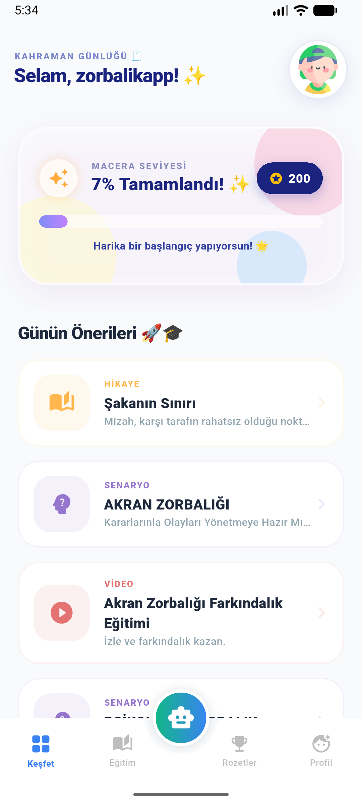
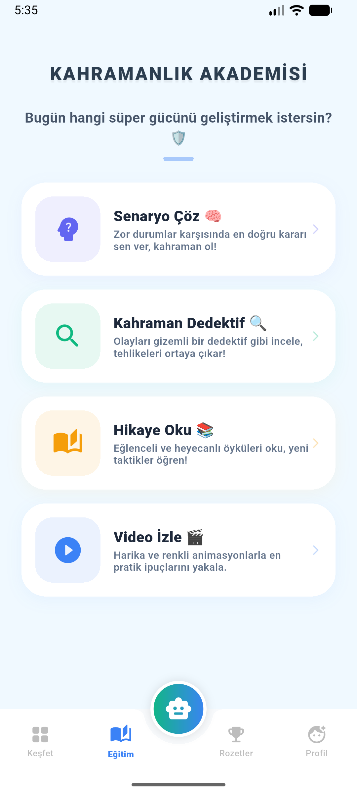
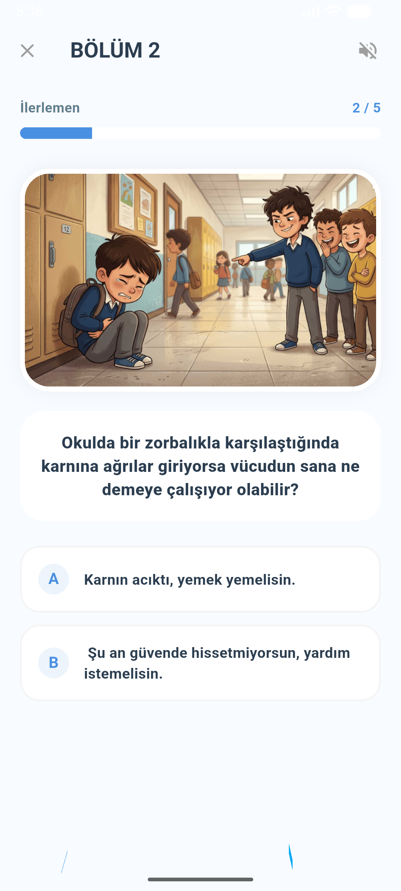
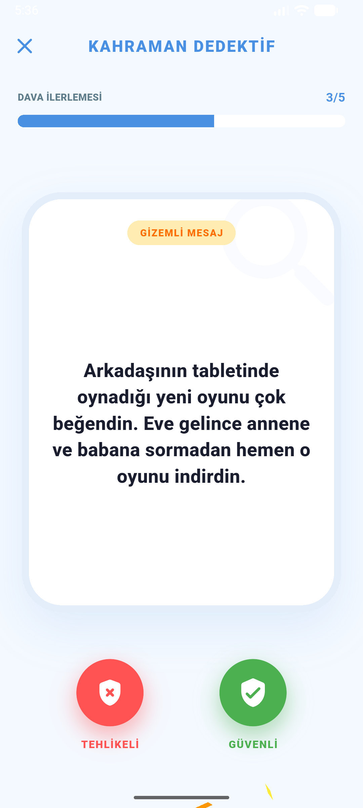
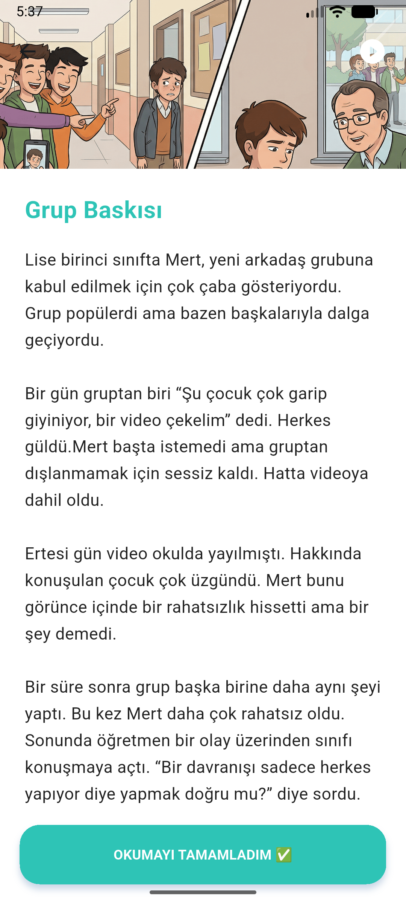
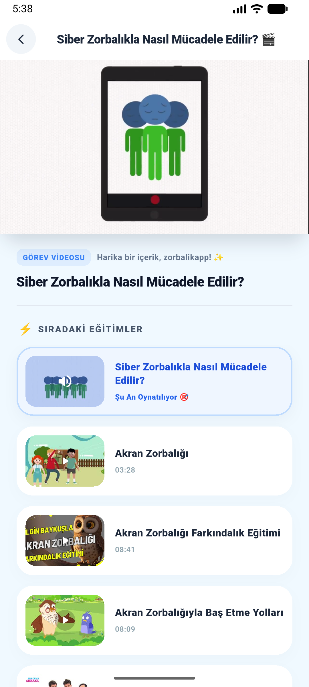
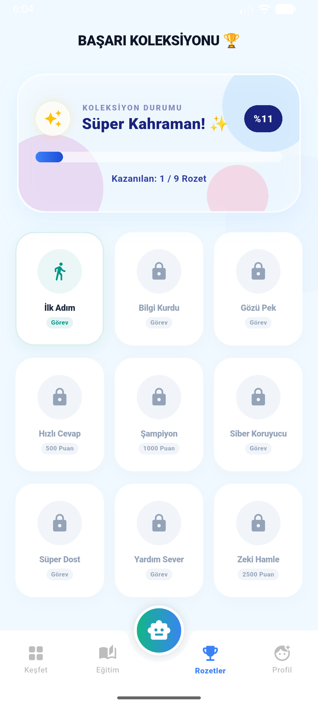
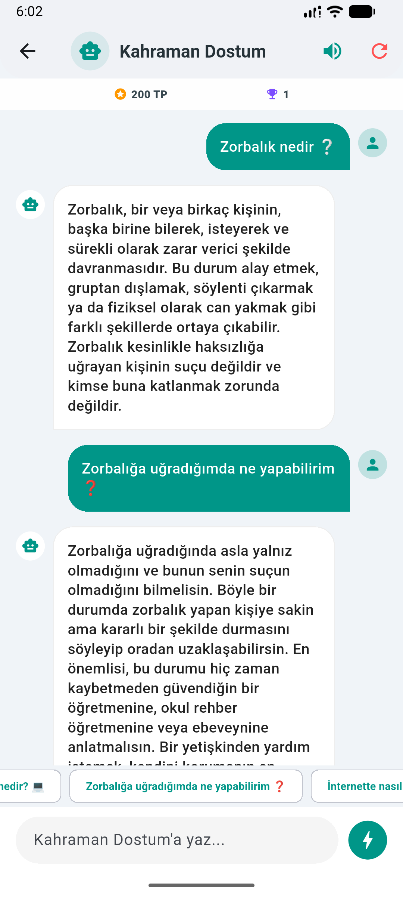
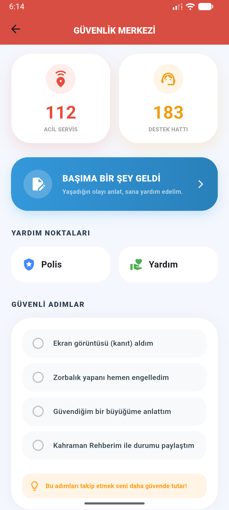

Zorbalığı Teşhis ve Tanıma
Zorbalık ile basit akran çatışması arasındaki farkları netleştiren, doğrudan senaryo örnekleriyle kavratan modül.
TÜBİTAK Akran Zorbalığı Farkındalık & Eğitim Projesi
Kahraman Dostum; çocukların ve gençlerin fiziksel, sözel, siber ve ilişkisel akran zorbalığını tüm boyutlarıyla tanımasını, haklarını öğrenmesini ve zorlayıcı durumlarda doğru adımları güvenle atabilmesini sağlayan bilimsel ve interaktif bir farkındalık platformudur.
Öğrenci Portalı
● Aktif Öğrenme AlanıFiziksel, sözel, siber ve ilişkisel zorbalık ayrımını öğren
Uzman onaylı içerik mimarisi
Fiziksel, sözel ve dijital olaylar
Oyunlaştırılmış motivasyon sistemi
Rehber öğretmen ve aile rehberliği
Kapsamlı İçerik Mimarisi
Öğrencilerin, ebeveynlerin ve eğitimcilerin ihtiyaç duyduğu tüm farkındalık araçları yapılandırılmış ve pedagojik ilkeler doğrultusunda sunulur.
Zorbalık ile basit akran çatışması arasındaki farkları netleştiren, doğrudan senaryo örnekleriyle kavratan modül.
Zorbalık anında soğukkanlı kalma, kararlı beden dili geliştirme, net "Hayır" deme ve güvenli alan oluşturma adımları.
Zorbalığa tanık olan gençlerin sessiz kalmayıp birer "olumlu arabulucu" haline gelerek arkadaşlarına nasıl destek olacağını öğretir.
Öğrencilerin her bir modülü ve oyunu tamamladıkça rozetler kazandığı, motivasyonlarını yüksek tutan ödül mimarisi.
Metodolojimiz
Akran zorbalığı olgusu, sadece ceza veya yasakla değil; bilinç, empati ve doğru iletişim mekanizmalarıyla kalıcı olarak çözülebilir.
Olayı doğru kavrayarak fiziksel, sözel veya siber zorbalık paternlerini görünür kılmak.
Fiziksel ve dijital ortamda sınırları net çizmek ve güvenli iletişime odaklanmak.
Rehberlik servisleri ve aile desteğiyle şiddetsiz ve yapıcı çözüme ulaşmak.

Kahraman Dostum, gençlerin özgüvenini ve dayanışma kültürünü güçlendirmeyi hedefleyen bir dijital farkındalık projesidir.
Mobil Uygulama
Keşfet, Eğitim, Rozet, Senaryolar ve daha fazlasını içeren Kahraman Dostum arayüzlerini inceleyin.









Projenin Ekibi
Akran zorbalığı farkındalığı için çalışan proje ekibimizi ve projeyle ilgili başarıları tanıyın.
Kahraman Dostum proje yürütücüsü.
Proje araştırmacısı.
Proje danışmanı.
Merak Edilenler
Kahraman Dostum projesi ve akran zorbalığı hakkında en çok yöneltilen soruların yanıtları.
Kahraman Dostum; akran zorbalığını tek bir alana sınırlamaz. Okulda, sokakta ve sosyal ortamlarda yaşanan fiziksel zorbalık (vurma, itme, eşyalara zarar verme), sözel zorbalık (lakap takma, hakaret, tehdit), ilişkisel/sosyal zorbalık (dışlama, dedikodu yayma, yalnızlaştırma) ve dijital dünyadaki siber zorbalık dahil olmak üzere tüm türleri pedagojik olarak ele alır.
Şakalaşmada her iki taraf da eğlenir ve taraflar arasında güç dengesizliği yoktur. Akran zorbalığında ise kasıtlı, süreklilik gösteren ve hedef alınan kişinin üzüntü, korku veya çaresizlik yaşamasına sebep olan tek taraflı bir eylem söz konusudur.
Öncelikle durumu kabullenip sessiz kalmamak esastır. Kararlı bir ses tonuyla bu davranışın durmasını istemek, olayı güvenilir bir yetişkine (rehber öğretmen, ebeveyn veya okul idaresi) bildirmek ve dijital zorbalık söz konusuysa ekran görüntülerini kanıt olarak saklamak gerekir.
Kahraman Dostum uygulamasını indirmek ve eğitim modüllerinden yararlanmak tamamen ücretsizdir. Yapay zeka destekli Siber Asistan ve analiz modüllerinde ek kullanım hakkı kazanmak için isteğe bağlı ödüllü reklam seçenekleri bulunmaktadır.
Uygulamada kullanıcı adı ve yaş grubu istenir; gerçek e-posta adresi istenmez. Hesap, ilerleme ve asistan sohbeti gibi veriler uygulama özelliklerini sunmak için Firebase ve Google'ın ilgili hizmetleri tarafından işlenebilir; isteğe bağlı ödüllü reklamlar Google AdMob üzerinden sunulur. Hesabınızı Profil bölümünden onaylayarak silebilirsiniz. İşlenen veriler ve dış hizmetler hakkında ayrıntı için Gizlilik Politikası ile Hesap Silme Kılavuzunu inceleyin.
Kahraman Dostum ile bilinçlenin, kendinizi ve sevdiklerinizi koruyun. Birlikte daha güvenli, duyarlı ve sevgi dolu bir gelecek inşa ediyoruz.